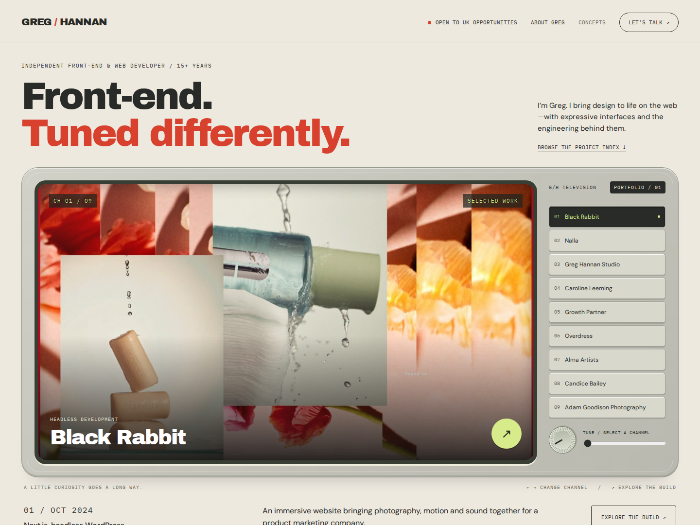

01 / BroadcastRecommended

Signal House
A tactile television for the web. Tune into a project, then expand the screen to explore Greg’s contribution.
Warm ivory · Terracotta · Signal green
Archivo Black + IBM Plex Mono
Channel tuning / Case-study window